Disney Technology is the innovation powerhouse behind Disney’s digital ecosystem, driving the development of cutting-edge platforms that enhance entertainment experiences worldwide. As the backbone of Disney’s digital transformation, it integrates advanced data analytics, AI-driven insights, and seamless user experiences across a diverse portfolio of over 40 entertainment apps. From personalized content recommendations to real-time audience engagement tools, Disney Technology ensures that every interaction is immersive, intuitive, and data-driven. By leveraging a 360° consumer view, it empowers decision-makers with valuable insights, optimizing advertising strategies and enhancing user engagement across global audiences.
Disney Technologies is the lab for new app development at Disney. They wanted to achieve a 360° view of users across their entertainment apps worldwide. With over 40 apps generating user interactions, the goal was to provide insights that would help agents determine the most effective advertising time slots.
The project required an in-depth understanding of stakeholder perspectives. This involved mapping the existing structure, conducting individual interviews, and clustering insights to define common goals.
Comprehensive research and planning were essential, including workshops to align business objectives with user needs. Insights gathered were transformed into flows, wireframes, mockups, prototypes, and handoff documentation to ensure a structured and accessible project for all team members.
Because a different roles/profiles could be define several uses cases into the platform, the UX team made diferents activityes characterization looking for special qualities which could solve UX design concerns.
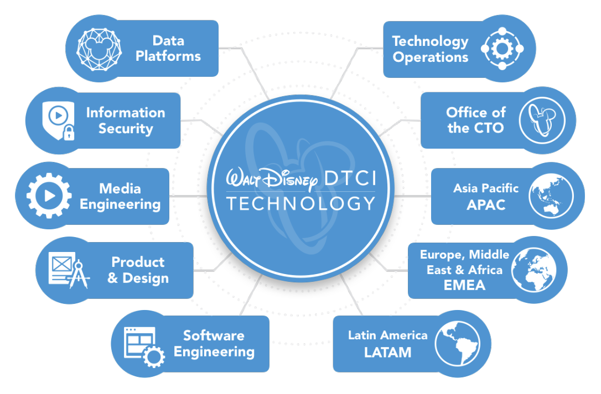
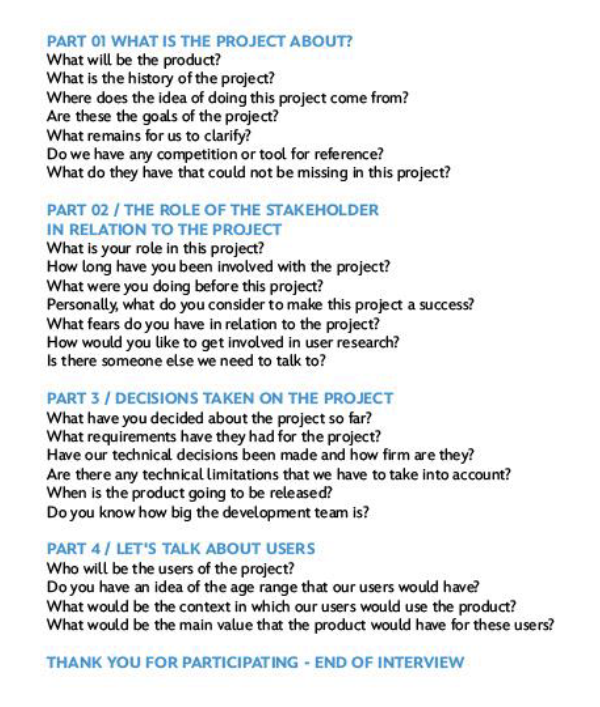
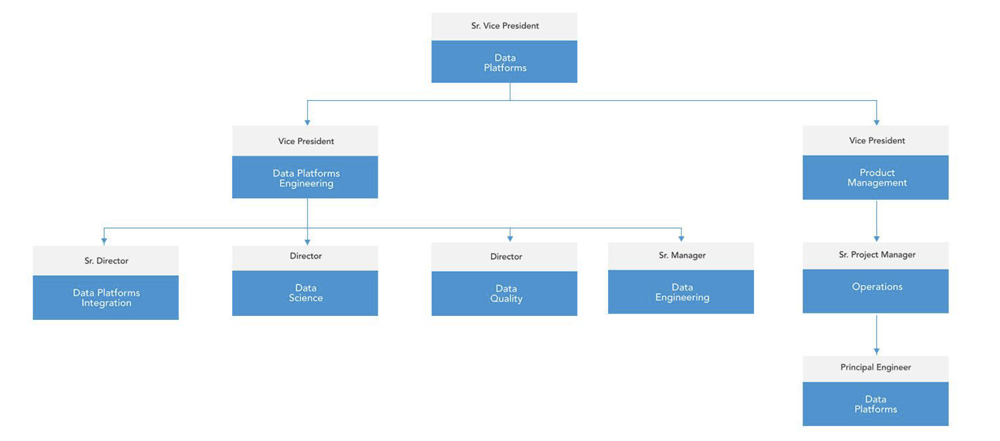
A deeper understanding of the user profile, needs, and desires was crucial for this solution and others. The process began with a synchronous workshop requiring stakeholder presence, but due to time constraints, it transitioned into an asynchronous activity to accommodate their availability.
A structured approach to design begins with a deep understanding of user interactions. By analyzing workflows and mapping user journeys, we ensure that every touchpoint aligns with business goals while enhancing usability and efficiency.
This strategic foundation drives intuitive design solutions that anticipate user needs and deliver seamless experiences.
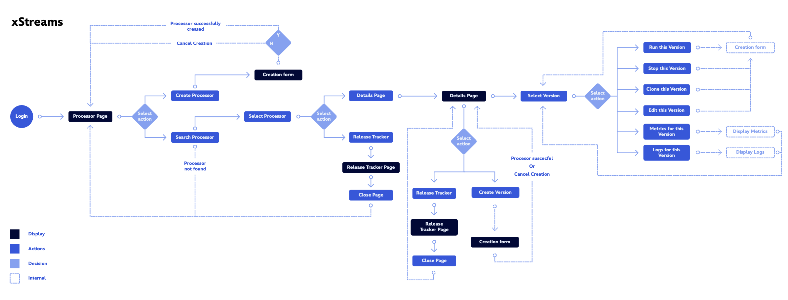
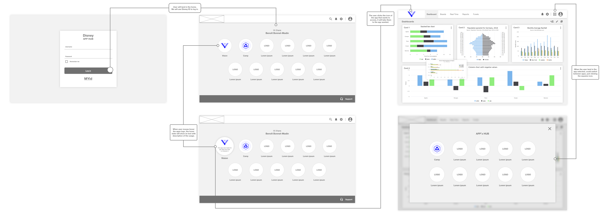
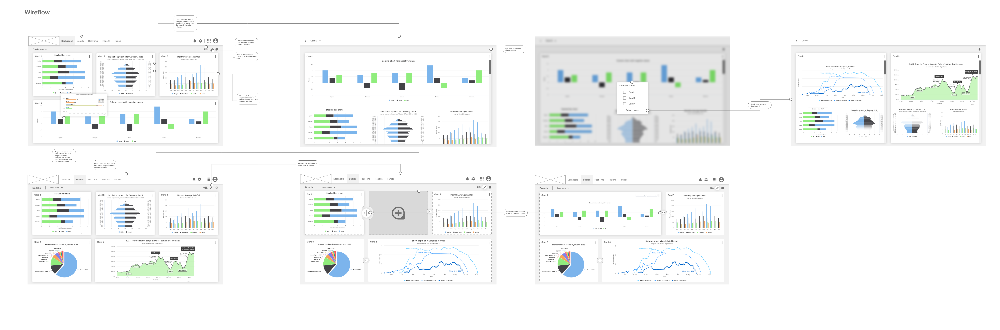
Early-stage validation is essential for refining design concepts before high-fidelity development. Low-fidelity prototypes enable rapid iteration and user feedback, ensuring usability and alignment with expectations.
This method accelerates design decisions, enhancing the final user experience while maintaining agility in the process.
After gathering insights from stakeholder interviews, user testing, and research activities, the design was refined and approved. Ensuring alignment with business goals and user needs, this phase is crucial for a seamless transition into development.
By meticulously validating the design, we ensure consistency, efficiency, and a user-centric final product.
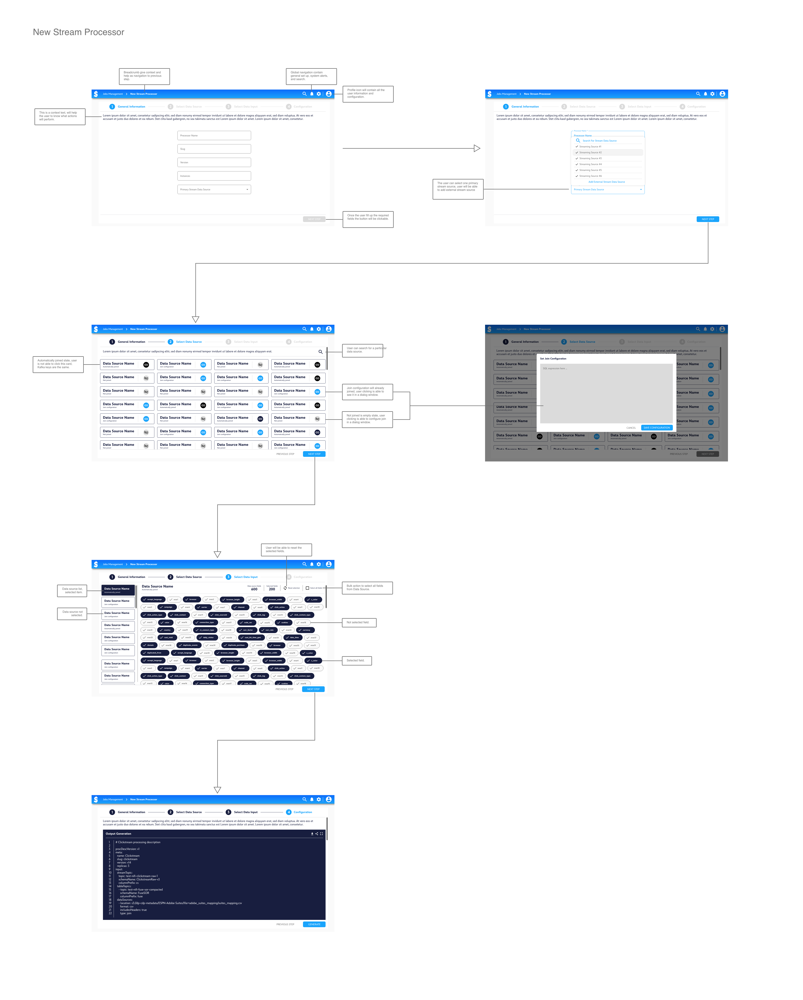
Handoff documents serve as the bridge between design and development, ensuring a smooth transition from concept to execution. These resources provide clarity on interactions, visual specifications, and user flows, enabling developers to implement designs with precision.
Key elements include:
By structuring handoff documents effectively, teams streamline collaboration and reduce implementation gaps.
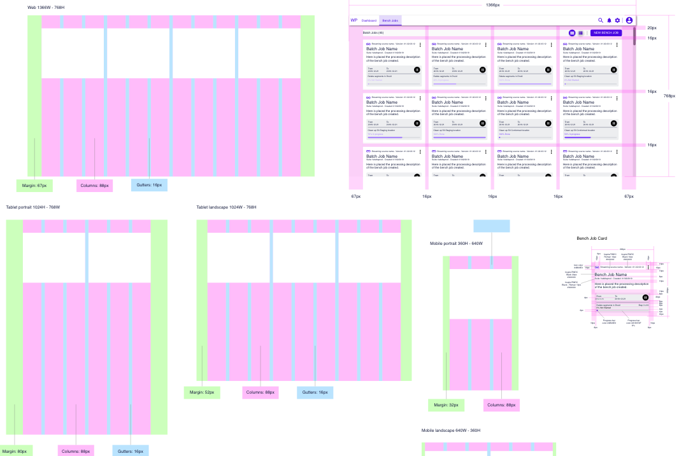
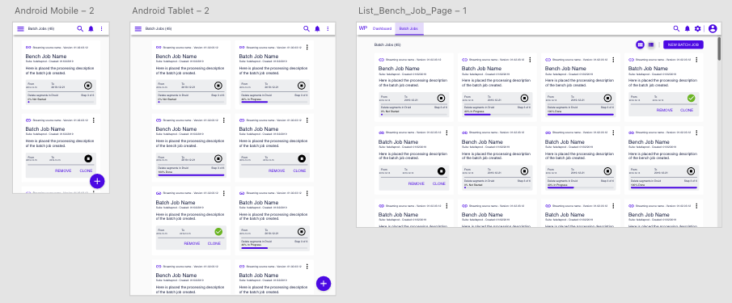
From Scratch This project was initiated to establish consistency across multiple applications within the Disney Technology Suite. From the outset, it was clear that at least four applications required a unified design language, making the design system a key focus. Extensive research and iterative refinement were conducted to define principles, guidelines, and best practices. The system ensures a cohesive user experience while streamlining design and development processes.
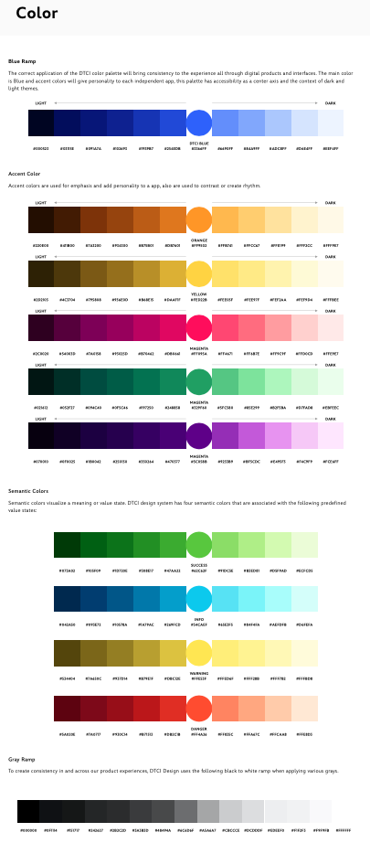
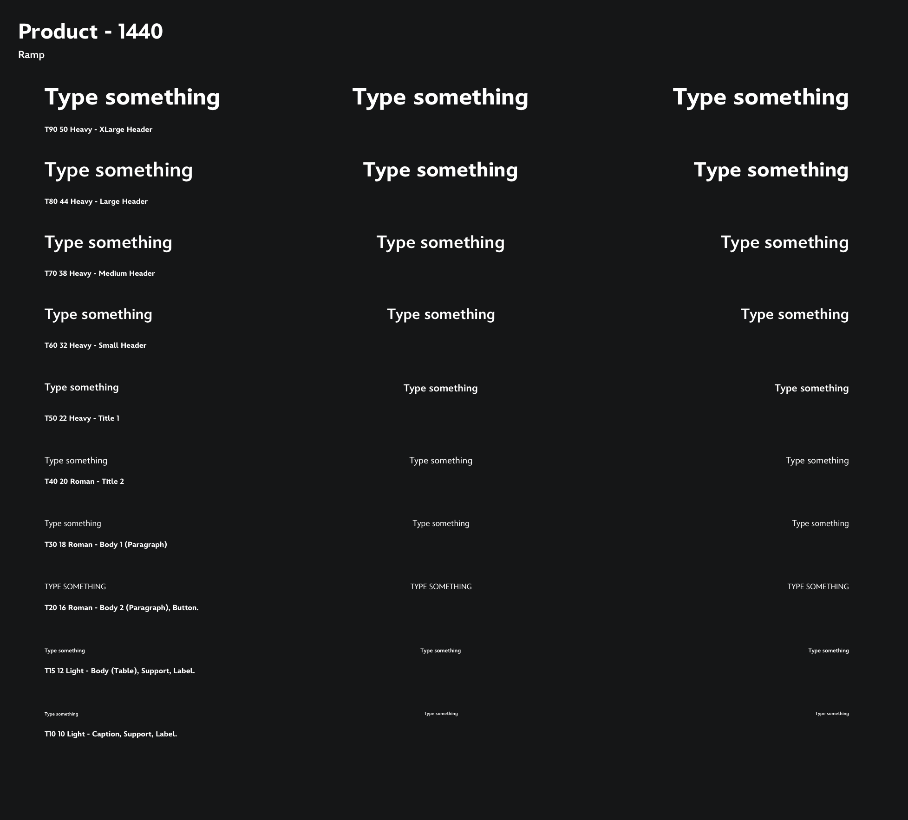
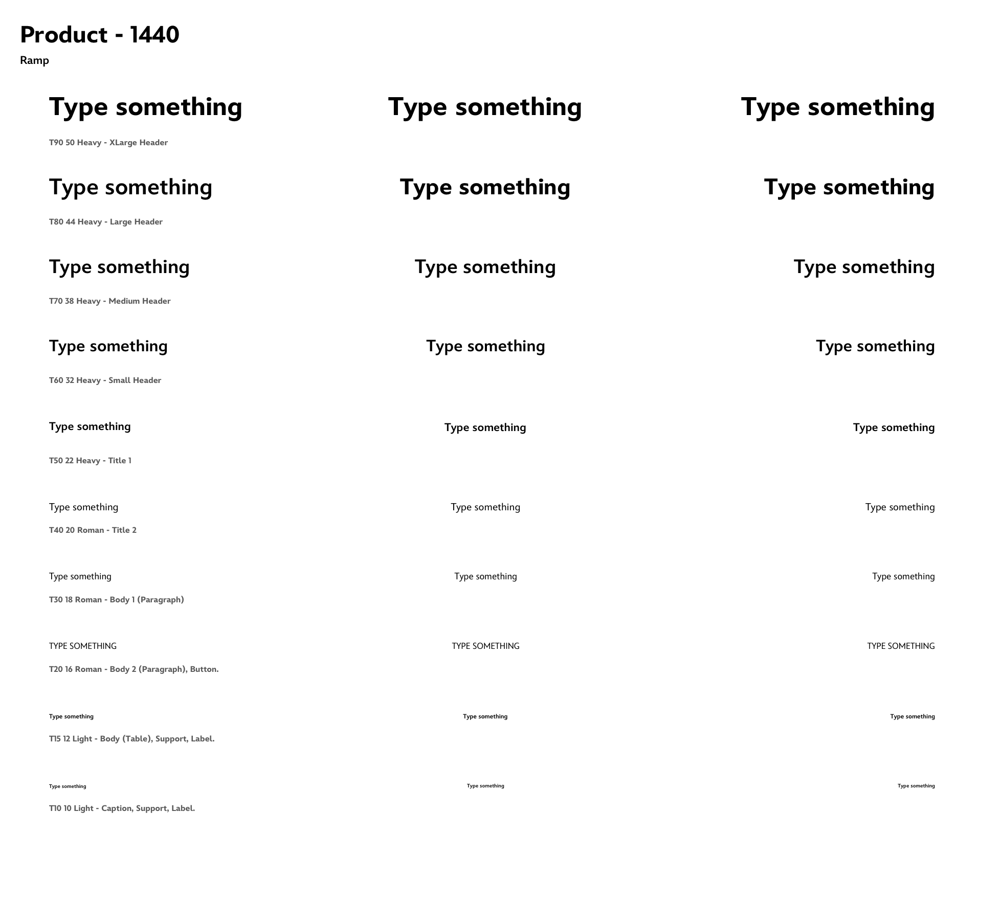
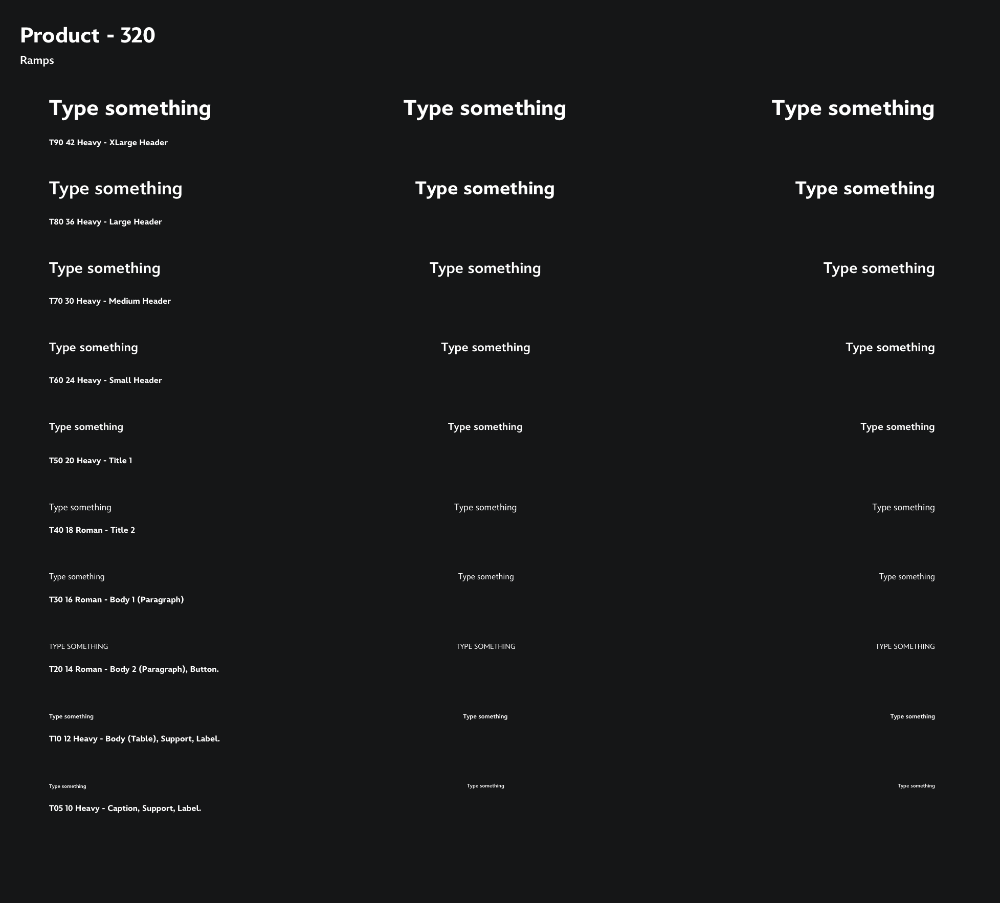
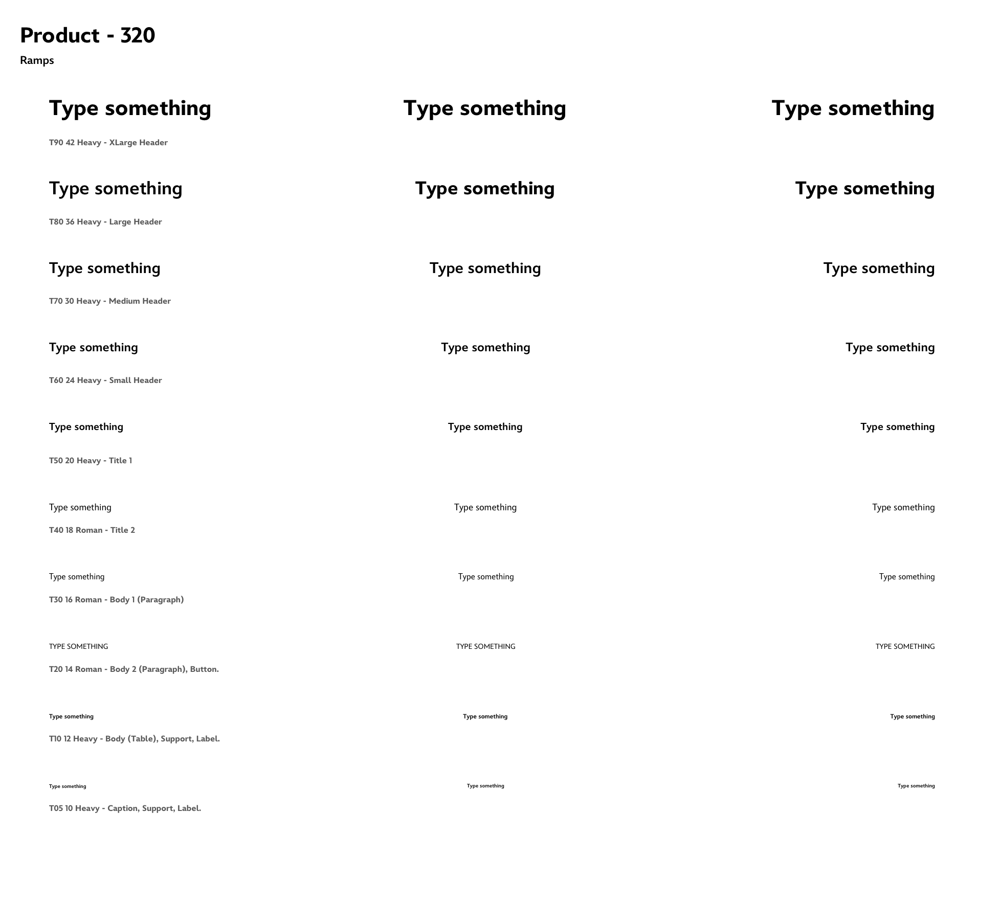